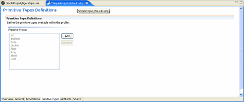
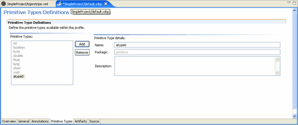

For your specific organization, you may want to create an organizational primitive type to be used with all projects utilizing Tigerstripe Workbench. The basic types are delivered by default with Tigerstripe, some of which include:

Primitive types define the basic types of attributes or method arguments. Your default profile contains a number of predefined primitive types, but through a profile you can add to this list to provide specific types that are applicable to your modeling environment and needs. Complete the following procedure to create a new primitive type
To create a new primitive type:
- Click the Primitive Types tab in your Project Profile Perspective.
- Click Add.

- Name your Primitive Type and enter a short description.
- Save your Project Profile.
Before your changes become available with your Tigerstripe project, you must deploy your Tigerstripe Profile. For more information about deploying your Tigerstripe Profile, refer to Deploying your Profile.
Profile Perspectives
The General Tab
The Annotation Tab
The Artifacts Tab
Deploying your Profile
Project Profiles
Rolling Back
Loading Factory Defaults

© copyright 2005, 2006, 2007 Cisco Systems, Inc. - All rights reserved